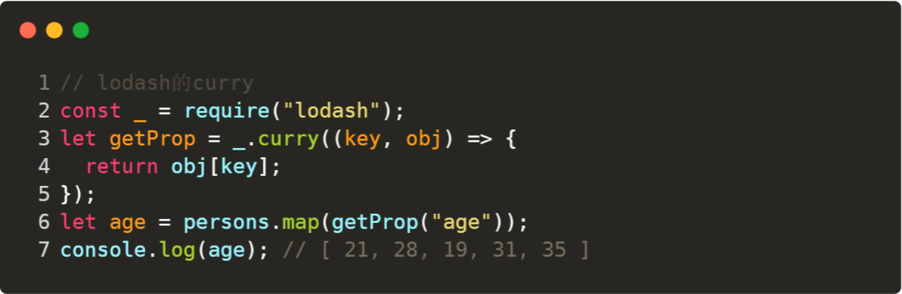
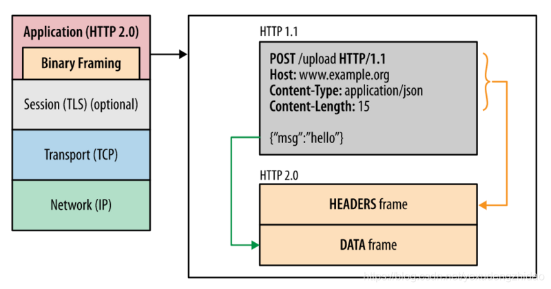
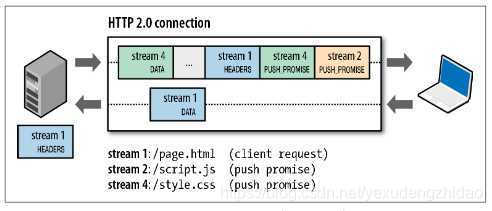

概括
作用域和闭包
执行上下文
针对一段script标签或者一个函数而言
-
JS只有全局作用域和函数作用域（在es6之前） -
使用
var声明的变量会在执行之前提升到作用域的最顶端。 -
即可以在函数声明之前调用函数。在变量声明之前调用变量（此时变量的值为
undefined）。 -
函数还包括this，arguments
this
只有在执行的时候才能确定。包括赋值引用。注意区分构造函数内部的 this 。
可以通过 call, apply , bind 来改变 this 的指向。
闭包
返回一个函数或者传入一个函数去执行。都可以称之为闭包。
在这个闭包函数内部，可以定义变量来防止外部污染。即，私有变量。
不过需要注意内存泄露问题，因为在这边定义的变量无法自动释放。
function F1() {
var a = 100;
return function () {
console.log(a); // 自由变量，取父级作用域中的值。
};
}
var f1 = F1();
var a = 200;
f1(); // 100
创建10个标签，注入点击事件，分别按顺序输出1-10
var i;
for (i = 0; i < 10; i++) {
(function (i) {
var a = document.createElement("a");
a.innerHTML = i + "<br>";
a.addEventListener("click", function (e) {
e.preventDefault();
alert(i);
});
document.body.appendChild(a);
})(i);
}
新的es6可以用let来解决这个问题。
for (let i = 0; i < 10; i++) {
var a = document.createElement("a");
a.innerHTML = i + "<br>";
a.addEventListener("click", function (e) {
e.preventDefault();
alert(i);
});
document.body.appendChild(a);
}
JS变量复习
- typeof 能得到哪些类型
- === 和 ==
- JS的内置函数
- 按存储方式划分，js变量有哪些类型
- 理解JSON
变量类型
值类型和引用类型
值类型：undefined, number, boolean, string, symbol, null
引用类型：function, object
还牵扯到堆内存和栈内存的关系，稍微延伸一下。
堆内存和栈内存
栈内存主要用于存储各种基本类型的变量，包括boolean、number、string、undefined、null，以及对象变量的指针，这时候栈内存给人的感觉就像一个线性排列的空间，每个小单元大小基本相等。
而堆内存主要负责像对象Object这种变量类型的存储，如下图
原始数据类型都有固定的大小保存在栈内存中，由系统自动分配存储空间，可以直接进行操作。
对于new出来的变量，思考一下new关键字所作所为，就知道，new出来的对象都是存储在堆内存中的。
我们常说的值类型和引用类型其实说的就是栈内存变量和堆内存变量，再想想值传递和引用传递、深拷贝和浅拷贝，都是围绕堆栈内存展开的，一个是处理值，一个是处理指针。
变量定义的过程
例如var a = 10:
先将10压入栈中，然后在当前作用域中声明一个变量a，此时a = undefined，然后再将 a 关联到10。
函数定义的过程
现在堆内存中开辟一块空间，将函数的以字符串的形式存入。然后会有一个十六进制的堆内存的值。然后存入栈内存中。然后声明变量fn，然后将fn关联到这个内存地址上。
垃圾回收机制
浏览器的垃圾回收机制
-
引用计数（RC）
-
标记清除
标记清除指的是当变量进入环境时，这个变量标记为“进入环境”;而当变量离开环境时，则将其标记为“离开环境”，最后，垃圾回收器完成内存清除工作，销毁并回收那些被标记为“离开环境”的值所占用的内存空间
V8的垃圾回收机制
分代回收：新生代和老生代。
新生代的垃圾回收
在堆内存中分两个部分，一个 From（使用中的空间） ，一个 To（闲置状态），分配对象的时候先在from空间中进行分配，如果一个对象不再被引用了，那么将会被留在From中，将其他被引用的对象移动到To空间中，然后对调From和To，最后释放To中的空间。
晋升
在新生代垃圾回收的过程中，当一个对象经过多次复制后依然存活，他将会被认为是生命周期较长的对象，随后会被移动到老生代中，采用新的算法进行管理
在From空间和To空间进行反转的过程中，如果To空间中的使用量已经超过了25%,那么就将From中的对象直接晋升到老生代内存空间中
老生代的垃圾回收
老生代的内存空间是一个连续的结构。
标记清除（Mark Sweep）：标记要回收的对象，直接释放相应的地址空间。执行完成之后会导致内存不连续 。
标记合并（Mark Compact）：将存活的对象移动到一边，需要被回收的移动到另一边。然后对需要被回收的区域进行整体垃圾回收。
typeof

变量计算
强制类型转换的场景
- 字符串拼接
- == 运算符
- if语句
- 逻辑运算


双等号的比较的时候的类型转换


// 防抖。当持续触发事件时，一定时间段内没有再触发事件，事件处理函数才会执行一次，如果设定的时间到来之前，又一次触发了事件，就重新开始延时。
let deBounce = (fn, delay) => {
let timer = null;
return function (...args) {
if (timer) {
clearTimeout(timer);
}
timer = setTimeout(() => {
fn(...args);
}, delay)
}
}
// 节流。当持续触发事件时，保证一定时间段内只调用一次事件处理函数。
let throttle = (fn, delay) => {
let flag = true;
return function (...args) {
if (!flag) return;
flag = false;
setTimeout(() => {
fn(...args)
flag = true;
}, delay)
}
}
let deBounce2 = (fn, delay) => {
let start = Date.now();
return function (...args) {
if (Date.now() - start > delay) {
fn(...args);
}
start = Date.now();
}
}
let throttle2 = (fn, delay) => {
let start = Date.now();
return function (...args) {
if (Date.now() - start > delay) {
fn(...args);
start = Date.now();
}
}
}
函数相关
compose函数和pipe函数
函数组合，将多个函数组合在一起。
compose函数
- 将需要嵌套执行的函数平铺
- 嵌套执行指的是，一个函数的返回值作为另一个函数的参数
compose 函数主要是实现了函数式编程中的 pointfree ，使我们专注于转换而不是数据本身。
也就是说，我们可以把数据处理的过程，定义成一种与参数无关合成运算。不需要关注参数本身，只需要将运算合成即可。
pointfree 就是不使用所要处理的值，只合成运算过程。即无参数分隔。
let compose = function () {
// 将arguments转为数组
let args = [].slice.call(arguments)
return function (params) {
// 自右向左，依次执行
return args.reduceRight(function (res, cb) {
return cb(res)
}, params)
}
}
es6版：
const compost = (...args) => params => args.reduceRight((res, cb) => cb(res), params)
Redux就是依赖compose来实现中间件的功能的。
Webpack的loader也是。
pipe函数
pipe就是compose的复制版，只不过执行方向变了，改为从左向右
export default function Pipe(...funcs) {
return params => funcs.reduce((res, cb) => cb(res), params)
}
常用函数
memozition
将上次的计算结果缓存起来，当下次调用时，如果遇到了相同的参数，就直接返回缓存中的数据
原理：
将参数和对应结果存储到一个对象中，调用时，先判断参数对应的数据是否存在，如果存在则直接返回，如果不存在才计算并存到缓存中。
闭包的灵魂体现！
lodash中的memoize实现：
// func是需要缓存的函数，resolver是计算key的函数
function memoize(func, resolver) {
// 类型校验
if (typeof func !== 'function' || (resolver != null && typeof resolver !== 'function')) {
throw new TypeError('Expected a function')
}
const memoized = function(...args) {
// 先计算一下key，如果没有计算函数，则取第一个参数
const key = resolver ? resolver.apply(this, args) : args[0]
// 取缓存
const cache = memoized.cache
// 如果缓存中有值，则直接返回
if (cache.has(key)) {
return cache.get(key)
}
// 缓存中没有值，先计算，再放入缓存中，再更新缓存
const result = func.apply(this, args)
memoized.cache = cache.set(key, result) || cache
return result
}
// 缓存初始化为Map
memoized.cache = new (memoize.Cache || Map)
// 返回缓存函数
return memoized
}
memoize.Cache = Map
export default memoize
使用场景：
需要大量重复计算或依赖之前的结果的情况
比如斐波那契数列
curry
将使用多个参数的一个函数，转化成一系列使用一个参数的函数的技术。

比如，使用正则校验一个字符串：

或者从对象数组中取某一个字符的值

在调用 getProp("age") 之后，这个的返回值，就变成了接受一个对象并返回对象的 age 属性的函数，放在map中就很舒服了。
偏函数
如果说，柯里化是将一个多参数函数转换成多个单参数函数，也就是将一个n元函数转换成n个一元函数。
那么偏函数就是固定一个函数的一个或者多个参数，也就是将一个n元函数转换成一个n-x元函数。
也就是：
柯里化： f(a,b,c) => f(a)(b)(c)
偏函数： f(a,b,c) => f(a,b)(c)
可以简单实用bind来实现
let add = (x, y) => x + y;
let rst = add.bind(null, 1);
rst(2); // 3
虚拟DOM
虚拟DOM是什么
DOM (Document Object Model) 译为文档对象模型，是 HTML 和 XML 文档的编程接口。
HTML DOM 定义了访问和操作 HTML 文档的标准方法。
DOM 以树结构表达 HTML 文档。
然后我们来做一个小实验：
const div = document.createElement('div');
let str = '';
for(let i in div) {
str += `${i} `
}
const attrs = str.split(' ')
console.log(attrs.splice(0,5), attrs.length)
out
(5) ["align", "title", "lang", "translate", "dir"] 294
我们可以看到浏览器对 DOM 赋予了很多属性来实现页面的各种功能，整个 DOM 的设计是相当复杂的。
当我们使用 document.body.appendChild(node) 往 body 节点上添加一个元素，调用该 API 之后会引发一系列的连锁反应。
首先渲染引擎会将 node 节点添加到 body 节点之上，然后触发样式计算、布局、绘制、栅格化、合成等任务，我们把这一过程称为重排。
除了重排之外，还有可能引起重绘或者合成操作，形象地理解就是“牵一发而动全身”。
另外，对于 DOM 的不当操作还有可能引发强制同步布局和布局抖动的问题，这些操作都会大大降低渲染效率。
因此，对于 DOM 的操作我们时刻都需要非常小心谨慎。
当然，对于简单的页面来说，其 DOM 结构还是比较简单的，所以以上这些操作 DOM 的问题并不会对用户体验产生太多影响。
但是对于一些复杂的页面或者目前使用非常多的单页应用来说，其 DOM 结构是非常复杂的，而且还需要不断地去修改 DOM 树，每次操作 DOM 渲染
引擎都需要进行重排、重绘或者合成等操作，因为 DOM 结构复杂，所生成的页面结构也会很复杂，对于这些复杂的页面，执行一次重排或者重绘操作 都是非常耗时的，这就给我们带来了真正的性能问题。
所以我们需要有一种方式来减少 JavaScript 对 DOM 的操作，这时候虚拟 DOM 就上场了。
简而言之，我们需要用一种方式去描述浏览器的 DOM 结构，并且在数据更新的过程中通过虚拟 DOM 的对比来做一层“缓冲”。避免频繁的直接操作 DOM 对象。
什么是虚拟DOM
在谈论什么是虚拟 DOM 之前，我们先来看看虚拟 DOM 到底要解决哪些事情。
- 将页面改变的内容应用到虚拟
DOM上，而不是直接应用到DOM上。 - 变化被应用到虚拟
DOM上时，虚拟DOM并不急着去渲染页面，而仅仅是调整虚拟DOM的内部状态，这样操作虚拟DOM的代价就变得非常轻了。 - 在虚拟
DOM收集到足够的改变时，再把这些变化一次性应用到真实的DOM上。
基于以上三点，我们再来看看什么是虚拟 DOM。为了直观理解，你可以参考下图：

该图结合 React 流程画的一张虚拟 DOM 执行流程图，下面我们就结合这张图来分析下虚拟 DOM 到底怎么运行的。
创建阶段。首先依据 JSX 和基础数据创建出来虚拟 DOM，它反映了真实的 DOM 树的结构。然后由虚拟 DOM 树创建出真实 DOM 树，真实的 DOM 树生成完后，
再触发渲染流水线往屏幕输出页面。
更新阶段。如果数据发生了改变，那么就需要根据新的数据创建一个新的虚拟 DOM 树；然后 React 比较两个树，找出变化的地方，并把变化的地方一次性更新到真实的 DOM 树上
最后渲染引擎更新渲染流水线，并生成新的页面。
通过上面的描述，我们知道，当我们使用一个JS对象来描述浏览器的 DOM 结构的时候，这个对象就叫做虚拟 DOM。（浏览器的 DOM 对象过于复杂）
下面这段话是我摘录的一段对于虚拟 DOM的描述。
Virtual DOM是一种编程概念。在这个概念里，UI以一种理想化的，或者说“虚拟的”表现形式被保存于内存中，并通过如ReactDOM等类库使之与“真实的”DOM同步。这一过程叫做协调。- 这种方式赋予了
React声明式的API：你告诉React希望让UI是什么状态，React就确保DOM匹配该状态。这使您可以从属性操作、 事件处理和手动DOM更新这些在构建应用程序时必要的操作中解放出来。- 与其将
Virtual DOM视为一种技术，不如说它是一种模式，人们提到它时经常是要表达不同的东西。在React的世界里，术语Virtual DOM通常 与React元素关联在一起，因为它们都是代表了用户界面的对象。- 而
React也使用一个名为fibers的内部对象来存放组件树的附加信息。上述二者也被认为是React中Virtual DOM实现的一部分。
我们来总结一下上面的话中比较重要的两点：
- 虚拟
DOM和真实DOM的交互不由虚拟DOM直接完成，交由第三方库完成，虚拟DOM只描述UI，UI到具体的展现，由ReactDOM等类库实现真正的渲染。 因此，ReactNative，小程序等跨端开发才得以实现。 React之类的类库，替你摆脱了频繁书写DOM操作的指令的坑，你不必再去书写类似document.getElementById(xxx).appendChild(xxx)之类的代码。 他们来负责数据变动到视图变动的过程。
在 React 或者 Vue 中，虚拟 DOM 的创建都是由模板或者 JSX 来完成的，但是这两者到虚拟 DOM 的转移都是工程化干的事情（webpack +
loader），因此我们也不需要去书写类似 React.createElement(xxx) 的代码，只需要书写 JSX 即可以通过工程化自动生成上面的代码。
因此虚拟 DOM 极大程度上帮我们减轻了开发的负担，易于维护，并且不依赖于某一特定的环境。
VDOM的优点
-
抽象了原本的渲染过程，实现了跨平台的的能力，从而不局限于浏览器的
DOM，也可以是安卓和IOS的原生组件，也可以是小程序。 -
抽象了渲染过程之后，使得组件的抽象能力也得到了提升，并且可以适配
DOM以外的渲染目标。 -
VDOM在牺牲了部分性能的前提下，增加了可维护性，这也是很多框架的通性。 实现了对DOM集中化操作，在数据改变的时候先对VDOM进行修改，再反映到真实的DOM中，用最小的代价来更新DOM，提升效率。 -
打开了函数式
UI编程的大门 -
跨平台（
ReactNative，React VR等） -
可以更好的实现
SSR，同构渲染等 -
组件的高度抽象化
VDOM的缺点
- 首次渲染大量
DOM的时候，由于多了一层虚拟DOM的计算，所以会比innerHTML插入的慢。 - 需要在内存中维护一份
VDOM - 如果虚拟
DOM有着大量的更改，使用虚拟DOM是很合适的，如果是单一的频繁的更新的话，虚拟DOM需要花时间去处理计算工作。
因此如果你有一个DOM节点相对较少的页面，使用VDOM可能会变慢。
但是对于大多数单页面应用，使用VDOM应该是更快的
React 中的 diff 算法
关于React中的虚拟DOM
Fiber架构之后的不同。可以自行搜索Fiber相关的内容。
Fiber之后，虚拟DOM从树形结构变为了可恢复的链表的结构。
Fiber 的出现主要是为了解决在大量 dom diff 的过程中，保证渲染流畅，（原来的 stack reconciler 会在 diff
过程中阻塞线程，导致页面卡顿，因为只有diff 完成之后才会渲染页面）
其实协程的另外一个称呼就是 Fiber，所以在这里我们可以把 Fiber 和协程关联起来，那么所谓的 Fiber reconciler 相信你也很清楚了，就是在执行算法的过程中出让主线程
这样就解决了 Stack reconciler 函数占用时间过久的问题。
实际上的思想类似于时间切片的概念。
主要利用了浏览器 requestIdleCallback 这个 API
关于Vue中的虚拟DOM
整体的实现思路大致类似上面的手动实现的方法。
以 Vue2.x 为例，可以在源码中找到这个文件来看一下。
在 Vue3.x 中并没有引进 Fiber 这一架构，具体原因可以在拓展阅读中查看。
拓展阅读
手动实现一个简单的虚拟 DOM (类似 Vue2.x ， React 中的 Fiber 太过于复杂)
创建
我们来尝试简单渲染一个 DOM 结构，
<div id='app'>
<p>节点1</p>
</div>
我们有一个最简陋的 createElement 函数来返回一个虚拟 DOM
const vnodeType = {
HTML: 'HTML',
TEXT: 'TEXT',
COMPONENT: 'COMPONENT',
CLASS_COMPONENT: 'CLASS_COMPONENT',
}
const childType = {
EMPTY: 'EMPTY',
SINGLE: 'SINGLE',
MULTIPLE: 'MULTIPLE',
}
// 新建虚拟DOM
// 名字，属性，子元素
function createElement(tag, data, children = null) {
let flag;
if (typeof tag === 'string') {
// 普通html标签
flag = vnodeType.HTML
} else if (typeof tag === 'function') {
flag = vnodeType.COMPONENT
} else {
flag = vnodeType.TEXT
}
// 0， 1， n
let childrenFlag;
if (children == null) {
childrenFlag = childType.EMPTY
} else if (Array.isArray(children)) {
let length = children.length
if (length === 0) {
childrenFlag = childType.EMPTY
} else {
childrenFlag = childType.MULTIPLE
}
} else {
childrenFlag = childType.SINGLE
children = createTextVnode(children + '')
}
// 返回vnode
return {
flag, //vnode类型
tag, // 标签，div文本没有tag，组件就是函数
data,
children,
childrenFlag
}
}
//渲染
function render() {
}
// 创建文本类型 vnode
function createTextVnode(text) {
return {
flag: vnodeType.TEXT,
tag: null,
data: null,
children: text,
childrenFlag: childType.EMPTY
}
}
页面上
let div = createElement('div', { id: 'app' }, [
createElement('p', {}, '节点1'),
]);
console.log(JSON.stringify(div, null, 2))
out
{
"flag": "HTML",
"tag": "div",
"data": {
"id": "app"
},
"children": [
{
"flag": "HTML",
"tag": "p",
"data": {},
"children": {
"flag": "TEXT",
"tag": null,
"data": null,
"children": "节点1",
"childrenFlag": "EMPTY"
},
"childrenFlag": "SINGLE"
}
],
"childrenFlag": "MULTIPLE"
}
接下来我们将它渲染到页面上。
渲染
我们搞多一些 p 元素在页面上，并且调用 render 函数来渲染。
<html lang="en">
<head>
<meta charset="UTF-8" />
<meta http-equiv="X-UA-Compatible" content="IE=edge" />
<meta name="viewport" content="width=device-width, initial-scale=1.0" />
<title>Document</title>
<style>
.item-header {
font-size: 30px;
color: green;
}
</style>
</head>
<body>
<div id='app'></div>
<script src='./index.js'></script>
<script>
let vnode = createElement('div', { id: 'app' }, [
createElement('p', { key: 'a', style: { color: 'blue' } }, '节点1'),
createElement('p', { key: 'b', '@click': () => alert('xxx') }, '节点2'),
createElement('p', { key: 'c', 'class': 'item-header' }, '节点3'),
createElement('p', { key: 'd' }, '节点4'),
]);
render(vnode, document.getElementById('app'))
// console.log(JSON.stringify(div, null, 2))
</script>
</body>
</html>
还有一些额外的工作（简易版本），需要注意以下的一些问题。
- 属性的处理。
- 首次渲染和
diff el属性- 递归渲染子元素
简易版的代码如下:
const vnodeType = {
HTML: 'HTML',
TEXT: 'TEXT',
COMPONENT: 'COMPONENT',
CLASS_COMPONENT: 'CLASS_COMPONENT',
};
const childType = {
// 节点没有子元素或者是空数组
EMPTY: 'EMPTY',
// 节点是文本元素
SINGLE: 'SINGLE',
// 节点有1或多个子元素
MULTIPLE: 'MULTIPLE',
};
// 新建虚拟DOM
// 名字，属性，子元素
function createElement(tag, data, children = null) {
let flag;
if (typeof tag === 'string') {
// 普通html标签
flag = vnodeType.HTML;
} else if (typeof tag === 'function') {
flag = vnodeType.COMPONENT;
} else {
flag = vnodeType.TEXT;
}
// 0， 1， n
let childrenFlag;
if (children == null) {
childrenFlag = childType.EMPTY;
} else if (Array.isArray(children)) {
let length = children.length;
if (length === 0) {
childrenFlag = childType.EMPTY;
} else {
childrenFlag = childType.MULTIPLE;
}
} else {
childrenFlag = childType.SINGLE;
// 文本元素直接给textVnode节点
children = createTextVnode(children + '');
}
// 返回vnode
return {
flag, //vnode类型
tag, // 标签，div文本没有tag，组件就是函数
data,
children,
childrenFlag,
el: null,
};
}
//渲染
function render(vnode, container) {
// 区分首次渲染和再次渲染
// 首次渲染直接mount，再次渲染需要diff
mount(vnode, container);
}
// 首次挂载元素
function mount(vnode, container) {
let { flag } = vnode;
// 区别对待HTML节点和Text节点
if (flag === vnodeType.HTML) {
mountElement(vnode, container);
} else if (flag === vnodeType.TEXT) {
mountText(vnode, container);
}
}
function mountElement(vnode, container) {
let dom = document.createElement(vnode.tag);
// 存一下，以后都能拿到真实dom
vnode.el = dom;
let { data, children, childrenFlag } = vnode;
// 挂载data属性
if (data) {
for (let key in data) {
// 节点，名字，老值，新值
patchData(dom, key, null, data[key]);
}
}
// 根据子元素的不同类型来渲染子元素
if (childrenFlag !== childType.EMPTY) {
if (childrenFlag === childType.SINGLE) {
mount(children, dom);
} else if (childrenFlag == childType.MULTIPLE) {
for (let i = 0; i < children.length; i++) {
mount(children[i], dom);
}
}
}
// 挂载
container.appendChild(dom);
}
function mountText(vnode, container) {
let dom = document.createTextNode(vnode.children);
vnode.el = dom;
// 挂载
container.appendChild(dom);
}
function patchData(el, key, pre, next) {
switch (key) {
// 处理style属性
case 'style':
for (let k in next) {
el.style[k] = next[k];
}
break;
// 处理class属性
case 'class':
el.className = next;
break;
// 其他
default:
// 处理事件绑定函数，以vue的@为例
if (key[0] === '@') {
if (next) {
el.addEventListener(key.slice(1), next);
}
} else {
el.setAttribute(key, next)
}
break;
}
}
// 创建文本类型 vnode
function createTextVnode(text) {
return {
flag: vnodeType.TEXT,
tag: null,
data: null,
children: text,
childrenFlag: childType.EMPTY,
el: null,
};
}
至此，虚拟 DOM 已经首次渲染到页面上了。
然后我们再来看看如何简单实现 DOM diff。
patch
假设我们要将
let vnode = createElement('div', { id: 'app' }, [
createElement('p', { key: 'a', style: { color: 'blue' } }, '节点1'),
createElement('p', { key: 'b', '@click': () => alert('xxx') }, '节点2'),
createElement('p', { key: 'c', 'class': 'item-header' }, '节点3'),
createElement('p', { key: 'd' }, '节点4'),
]);
里渲染的 DOM ，变更为如下的 DOM 结构，然后在一秒后重新渲染：
let vnode1 = createElement("div", { id: "app" }, [
createElement("p", { key: 'd' }, "节点4"),
createElement("p", { key: 'a', style: { color: 'blue' } }, "节点1"),
createElement("p", { key: 'b', }, "节点2"),
createElement("p", { key: 'e' }, "节点5"),
createElement("p", { key: 'f', style: { color: '#eee' } }, "节点4"),
]);
setTimeout(() => {
render(vnode1, document.getElementById('app'))
})
然后我们需要在 render 函数里区分首次渲染和再次渲染：
//渲染
function render(vnode, container) {
// 区分首次渲染和再次渲染
// 首次渲染直接mount，再次渲染需要diff
if (container.vnode) {
// 更新
patch(container.vnode, vnode, container);
} else {
mount(vnode, container);
}
container.vnode = vnode;
}
然后我们看一下 patch 函数：
function patch(pre, next, container) {
let nextFlag = next.flag;
let preFlag = pre.flag;
// 如果flag不同直接替换。
if (nextFlag !== preFlag) {
// 直接替换
repaceVnode(pre, next, container);
} else if (nextFlag == vnodeType.HTML) {
patchElement(pre, next, container);
} else if (nextFlag == vnodeType.TEXT) {
// 文本节点只需要更新文字内容即可
patchText(pre, next);
}
}
// 替换节点，先移除再mount
function replaceVnode(pre, next) {
container.removeChild(pre.el);
mount(next, container);
}
// 文本节点直接替换文字即可
function patchText(pre, next) {
let el = (next.el = pre.el);
if (next.children !== pre.children) {
el.nodeValue = next.children;
}
}
以上两种最简单的对比都是比较好理解的。接下来来看一下 flag 不同的 HTML 节点的替换 patchElement 。
function patchElement(pre, next, container) {
// 如果tag不同就直接替换掉
if (pre.tag !== next.tag) {
repaceVnode(pre, next, container);
return;
}
// 更新一下 el， 然后更新data
let el = (next.el = pre.el);
let preData = pre.data;
let nextData = next.data;
// 如果有新值，则全部更新到el上
if (nextData) {
for (let key in nextData) {
let preVal = preData[key];
let nextVal = nextData[key];
patchData(el, key, preVal, nextVal);
}
}
// 对旧值进行处理，
// 旧的有，新的没有，就要置为空
// 旧的有，新的有的已经在上面一个循环里被覆盖掉了。
if (preData) {
for (let key in preData) {
let preVal = preData[key];
if (preVal && !nextData.hasOwnProperty(key)) {
patchData(el, key, preVal, null);
}
}
}
// data更新完毕 下面更新子元素
patchChildren(
pre.childrenFlag,
next.childrenFlag,
pre.children,
next.children,
el
);
}
// 更新子元素的方法
function patchChildren(
preChildFlag,
nextChildFlag,
preChildren,
nextChildren,
container
) {
// 新老元素都有三种情况，用switch case做嵌套处理
// 更新子元素
// 老的是 1 ， 0， n
// 新的是 1， 0 ， n
switch (preChildFlag) {
// 老的是一个
case childType.SINGLE:
switch (nextChildFlag) {
// 新的也是一个，直接patch
case childType.SINGLE:
patch(preChildren, nextChildren, container)
break;
// 新的是空的，直接移除老的
case childType.EMPTY:
container.removeChild(preChildren.el)
break;
// 新的是多个的，先移除老的，再循环mount新的
case childType.MULTIPLE:
container.removeChild(preChildren.el)
for (let i = 0; i < nextChildren.length; i++) {
mount(nextChildren[i], container)
}
break;
}
break;
// 老的是空的
case childType.EMPTY:
switch (nextChildFlag) {
// 新的是一个，直接mount
case childType.SINGLE:
mount(nextChildren, container)
break;
// 新的也是空的，不做处理
case childType.EMPTY:
break;
// 新的是多个，直接循环mount新的
case childType.MULTIPLE:
for (let i = 0; i < nextChildren.length; i++) {
mount(nextChildren[i], container)
}
break;
}
break;
// 老的是多个
case childType.MULTIPLE:
switch (nextChildFlag) {
// 新的是一个，循环移除老的，再把新的mount上去
case childType.SINGLE:
for (let i = 0; i < preChildren.length; i++) {
container.removeChild(preChildren[i]);
}
mount(nextChildren, container)
break;
// 新的是空的，循环移除老的，接下来无操作
case childType.EMPTY:
for (let i = 0; i < preChildren.length; i++) {
container.removeChild(preChildren[i]);
}
break;
// 新的是多个的情况，比较复杂，React和Vue的实现不同。这里简单实现一下。
// 这个算法网上都有讲解，就不赘述了。
default:
let lastIndex = 0
for (let i = 0; i < nextChildren.length; i++) {
const nextVNode = nextChildren[i]
let j = 0,
find = false
for (j; j < preChildren.length; j++) {
const prevVNode = preChildren[j]
if (nextVNode.key === prevVNode.key) {
find = true
patch(prevVNode, nextVNode, container)
if (j < lastIndex) {
// 需要移动
const refNode = nextChildren[i - 1].el.nextSibling
container.insertBefore(prevVNode.el, refNode)
break
} else {
// 更新 lastIndex
lastIndex = j
}
}
}
if (!find) {
// 挂载新节点
const refNode =
i - 1 < 0
? preChildren[0].el
: nextChildren[i - 1].el.nextSibling
mount(nextVNode, container, refNode)
}
}
// 移除已经不存在的节点
for (let i = 0; i < preChildren.length; i++) {
const prevVNode = preChildren[i]
const has = nextChildren.find(
nextVNode => nextVNode.key === prevVNode.key
)
if (!has) {
// 移除
container.removeChild(prevVNode.el)
}
}
break;
}
break;
}
}
至此，一次 DOM 更新就实现了。
React事件机制
DOM事件
冒泡和捕获

先从父元素向下传递捕获，直到子元素处理掉，然后再逐个冒泡。
所以有了一个事件委托的机制。
React事件
React会将所有事件都绑定在document上。
统一使用事件监听。都是在冒泡阶段处理。
所以一般在组件挂载的时候增加监听事件。
组件卸载的时候删除监听事件。
事件触发的时候，组件会生成一个合成事件。然后发送到document上。
document会通过dispatch event回调函数依次执行dispatch listener中同类型事件的监听函数。
事件注册是在组件生成的时候，将VDOM中的所有的事件对应的原生事件都注册在Document中一个监听器中。所有的事件处理函数都存放在listenerbank中，并以key做为索引。（将可能要触发的事件分门别类）
- 是合成事件，不是DOM原生事件
- 在document监听所有支持事件
- 使用统一的分发函数dispatchEvent来指定事件函数的执行
HTTP2.0
-
多路复用
-
防止队头阻塞
-
压缩HTTP头部
-
服务端推送
-
二进制分帧
前言
HTTP2.0大幅度的提高了web性能，在HTTP1.1完全语义兼容的基础上，进一步减少了网络的延迟。实现低延迟高吞吐量。对于前端开发者而言，减少了优化工作。本文将重点围绕以下几点新特性的作用、工作过程以及如何更出色的完成了优化工作来介绍HTTP2.0
- 二进制分帧
- 首部压缩
- 多路复用
- 请求优先级
- 服务器推送
一. 介绍
HTTP/2是HTTP协议自1999年HTTP1.1发布后的首个更新，主要基于SPDY协议。
1.1 什么是SPDY协议
SPDY是Speedy的昵音，意为“更快”。它是Google开发的基于TCP协议的应用层协议。目标是优化HTTP协议的性能，通过压缩、多路复用和优先级等技术，缩短网页的加载时间并提高安全性。SPDY协议的核心思想是尽量减少TCP连接数。SPDY并不是一种用于替代HTTP的协议，而是对HTTP协议的增强。
1.2 HTTP1.X的缺点
任何事物的更新都是为了弥补或修复上个版本的某些问题，那么我们来看看HTTP1.x都有哪些缺点以至于我们要使用HTTP2.0。
HTTP1.x有以下几个主要缺点：
- HTTP/1.0一次只允许在一个TCP连接上发起一个请求，HTTP/1.1使用的流水线技术也只能部分处理请求并发，仍然会存在队列头阻塞问题，因此客户端在需要发起多次请求时，通常会采用建立多连接来减少延迟。
- 单向请求，只能由客户端发起。
- 请求报文与响应报文首部信息冗余量大。
- 数据未压缩，导致数据的传输量大
我们可以通过一个链接来对比一下HTTP2.0到底比HTTP1.x快了多少。链接地址
二. 二进制分帧
在不改变HTTP1.x的语义、方法、状态码、URL以及首部字段的情况下，HTTP2.0是怎样突破HTTP1.1的性能限制，改进传输性能，实现低延迟高吞吐量的呢？关键之一就是在应用层（HTTP）和传输层（TCP）之间增加一个二进制分帧层。
在整理二进制分帧及其作用的时候我们先来铺垫一点关于帧的知识：
- 帧：HTTP2.0通信的最小单位，所有帧都共享一个8字节的首部，其中包含帧的长度、类型、标志、还有一个保留位，并且至少有标识出当前帧所属的流的标识符，帧承载着特定类型的数据，如HTTP首部、负荷、等等。
- 消息：比帧大的通讯单位，是指逻辑上的HTTP消息，比如请求、响应等。由一个或多个帧组成
- 流：比消息大的通讯单位。是TCP连接中的一个虚拟通道，可以承载双向的消息。每个流都有一个唯一的整数标识符
HTTP2.0中所有加强性能的核心是二进制传输，在HTTP1.x中，我们是通过文本的方式传输数据。基于文本的方式传输数据存在很多缺陷，文本的表现形式有多样性，因此要做到健壮性考虑的场景必然有很多，但是二进制则不同，只有0和1的组合，因此选择了二进制传输，实现方便且健壮。 在HTTP2.0中引入了新的编码机制，所有传输的数据都会被分割，并采用二进制格式编码。 
为了保证HTTP不受影响，那就需要在应用层（HTTP2.0）和传输层（TCP or
UDP）之间增加一个二进制分帧层。在二进制分帧层上，HTTP2.0会将所有传输的信息分为更小的消息和帧，并采用二进制格式编码，其中HTTP1.x的首部信息会被封装到Headers帧，而Request Body则封装到Data帧。
三. 首部压缩
HTTP1.1并不支持HTTP首部压缩，为此SPDY和HTTP2.0出现了。SPDY是用的是DEFLATE算法，而HTTP2.0则使用了专门为首部压缩设计的HPACK算法。
HTTP每次通讯（请求或响应）都会携带首部信息用于描述资源属性。
在HTTP1.0中，我们使用文本的形式传输header，在header中携带cookie的话，每次都需要重复传输几百到几千的字节，这着实是一笔不小的开销。
在HTTP2.0中，我们使用了HPACK（HTTP2头部压缩算法）压缩格式对传输的header进行编码，减少了header的大小。并在两端维护了索引表，用于记录出现过的header，后面在传输过程中就可以传输已经记录过的header的键名，对端收到数据后就可以通过键名找到对应的值。
四. 多路复用
在HTTP1.x中，我们经常会使用到雪碧图、使用多个域名等方式来进行优化，都是因为浏览器限制了同一个域名下的请求数量，当页面需要请求很多资源的时候，队头阻塞（Head of line blocking）会导致在达到最大请求时，资源需要等待其他资源请求完成后才能继续发送。
HTTP2.0中,基于二进制分帧层，HTTP2.0可以在共享TCP连接的基础上同时发送请求和响应。HTTP消息被分解为独立的帧，而不破坏消息本身的语义，交错发出去，在另一端根据流标识符和首部将他们重新组装起来。 通过该技术，可以避免HTTP旧版本的队头阻塞问题，极大提高传输性能。
五. 请求优先级
把HTTP消息分为很多独立帧之后，就可以通过优化这些帧的交错和传输顺序进一步优化性能。
六. 服务器推送
HTTP2.0新增的一个强大的新功能，就是服务器可以对一个客户端请求发送多个响应。服务器向客户端推送资源无需客户端明确的请求。
服务端根据客户端的请求，提前返回多个响应，推送额外的资源给客户端。如下图，客户端请求stream 1(/page.html)。服务端在返回stream 1的消息的同时推送了stream 2(/script.js)和stream 4(/style.css)  服务端推送是一种在客户端请求之前发送数据的机制。在HTTP2.0中，服务器可以对一个客户端的请求发送多个响应。如果一个请求是由你的主页发送的，服务器可能会响应主页内容、logo以及样式表，因为他知道客户端会用到这些东西。这样不但减轻了数据传送冗余步骤，也加快了页面响应的速度，提高了用户体验。
推送的缺点：所有推送的资源都必须遵守同源策略。换句话说，服务器不能随便将第三方资源推送给客户端，而必须是经过双方的确认才行。
HTTP3.0
把TCP层拆成QUIC + UDP

HTTP2.0
1.1 HTTP2.0和TCP的爱恨纠葛
HTTP2.0是2015年推出的，还是比较年轻的，其重要的二进制分帧协议、多路复用、头部压缩、服务端推送等重要优化使HTTP协议真正上了一个新台阶。

像谷歌这种重要的公司并没有满足于此，而且想继续提升HTTP的性能，花最少的时间和资源获取极致体验。
那么肯定要问HTTP2.0虽然性能已经不错了，还有什么不足吗？
建立连接时间长(本质上是TCP的问题) 队头阻塞问题 移动互联网领域表现不佳(弱网环境) ......
熟悉HTTP2.0协议的同学应该知道，这些缺点基本都是由于TCP协议引起的，水能载舟亦能覆舟，其实TCP也很无辜呀！

在我们眼里，TCP是面向连接、可靠的传输层协议，当前几乎所有重要的协议和应用都是基于TCP来实现的。
网络环境的改变速度很快，但是TCP协议相对缓慢，正是这种矛盾促使谷歌做出了一个看似出乎意料的决定-基于UDP来开发新一代HTTP协议。
1.2 谷歌为什么选择UDP
上文提到，谷歌选择UDP是看似出乎意料的，仔细想一想其实很有道理。
我们单纯地看看TCP协议的不足和UDP的一些优点：
基于TCP开发的设备和协议非常多，兼容困难 TCP协议栈是Linux内部的重要部分，修改和升级成本很大 UDP本身是无连接的、没有建链和拆链成本 UDP的数据包无队头阻塞问题 UDP改造成本小
从上面的对比可以知道，谷歌要想从TCP上进行改造升级绝非易事，但是UDP虽然没有TCP为了保证可靠连接而引发的问题，但是UDP本身不可靠，又不能直接用。

综合而知，谷歌决定在UDP基础上改造一个具备TCP协议优点的新协议也就顺理成章了，这个新协议就是QUIC协议。
1.3 QUIC协议和HTTP3.0
QUIC其实是Quick UDP Internet Connections的缩写，直译为快速UDP互联网连接。

我们来看看维基百科对于QUIC协议的一些介绍：
QUIC协议最初由Google的Jim Roskind设计，实施并于2012年部署，在2013年随着实验的扩大而公开宣布，并向IETF进行了描述。
QUIC提高了当前正在使用TCP的面向连接的Web应用程序的性能。它在两个端点之间使用用户数据报协议（UDP）建立多个复用连接来实现此目的。
QUIC的次要目标包括减少连接和传输延迟，在每个方向进行带宽估计以避免拥塞。它还将拥塞控制算法移动到用户空间，而不是内核空间，此外使用前向纠错（FEC）进行扩展，以在出现错误时进一步提高性能。
HTTP3.0又称为HTTP Over QUIC，其弃用TCP协议，改为使用基于UDP协议的QUIC协议来实现。

QUIC协议详解
择其善者而从之，其不善者而改之。
HTTP3.0既然选择了QUIC协议，也就意味着HTTP3.0基本继承了HTTP2.0的强大功能，并且进一步解决了HTTP2.0存在的一些问题，同时必然引入了新的问题。

QUIC协议必须要实现HTTP2.0在TCP协议上的重要功能，同时解决遗留问题，我们来看看QUIC是如何实现的。
2.1 队头阻塞问题
队头阻塞 Head-of-line blocking（缩写为HOL blocking）是计算机网络中是一种性能受限的现象，通俗来说就是：一个数据包影响了一堆数据包，它不来大家都走不了。
队头阻塞问题可能存在于HTTP层和TCP层，在HTTP1.x时两个层次都存在该问题。

HTTP2.0协议的多路复用机制解决了HTTP层的队头阻塞问题，但是在TCP层仍然存在队头阻塞问题。
TCP协议在收到数据包之后，这部分数据可能是乱序到达的，但是TCP必须将所有数据收集排序整合后给上层使用，如果其中某个包丢失了，就必须等待重传，从而出现某个丢包数据阻塞整个连接的数据使用。
QUIC协议是基于UDP协议实现的，在一条链接上可以有多个流，流与流之间是互不影响的，当一个流出现丢包影响范围非常小，从而解决队头阻塞问题。
2.2 0RTT 建链
衡量网络建链的常用指标是RTT Round-Trip Time，也就是数据包一来一回的时间消耗。

RTT包括三部分：往返传播时延、网络设备内排队时延、应用程序数据处理时延。

一般来说HTTPS协议要建立完整链接包括:TCP握手和TLS握手，总计需要至少2-3个RTT，普通的HTTP协议也需要至少1个RTT才可以完成握手。
然而，QUIC协议可以实现在第一个包就可以包含有效的应用数据，从而实现0RTT，但这也是有条件的。

简单来说，基于TCP协议和TLS协议的HTTP2.0在真正发送数据包之前需要花费一些时间来完成握手和加密协商，完成之后才可以真正传输业务数据。
但是QUIC则第一个数据包就可以发业务数据，从而在连接延时有很大优势，可以节约数百毫秒的时间。

QUIC的0RTT也是需要条件的，对于第一次交互的客户端和服务端0RTT也是做不到的，毕竟双方完全陌生。
因此，QUIC协议可以分为首次连接和非首次连接，两种情况进行讨论。
2.3 首次连接和非首次连接
使用QUIC协议的客户端和服务端要使用1RTT进行密钥交换，使用的交换算法是DH(Diffie-Hellman)迪菲-赫尔曼算法。
DH算法开辟了密钥交换的新思路，在之前的文章中提到的RSA算法也是基于这种思想实现的，但是DH算法和RSA的密钥交换不完全一样，感兴趣的读者可以看看DH算法的数学原理。
DH算法开辟了密钥交换的新思路，在之前的文章中提到的RSA算法也是基于这种思想实现的，但是DH算法和RSA的密钥交换不完全一样，感兴趣的读者可以看看DH算法的数学原理。
2.3.1 首次连接
简单来说一下，首次连接时客户端和服务端的密钥协商和数据传输过程，其中涉及了DH算法的基本过程：
- 客户端对于首次连接的服务端先发送client hello请求。
- 服务端生成一个素数p和一个整数g，同时生成一个随机数 (笔误-此处应该是Ks_pri)为私钥，然后计算出公钥 = mod p，服务端将，p，g三个元素打包称为config，后续发送给客户端。
- 客户端随机生成一个自己的私钥，再从config中读取g和p，计算客户端公钥 = mod p。
- 客户端使用自己的私钥和服务端发来的config中读取的服务端公钥，生成后续数据加密用的密钥K = mod p。
- 客户端使用密钥K加密业务数据，并追加自己的公钥，都传递给服务端。
- 服务端根据自己的私钥和客户端公钥生成客户端加密用的密钥K = mod p。
- 为了保证数据安全，上述生成的密钥K只会生成使用1次，后续服务端会按照相同的规则生成一套全新的公钥和私钥，并使用这组公私钥生成新的密钥M。
- 服务端将新公钥和新密钥M加密的数据发给客户端，客户端根据新的服务端公钥和自己原来的私钥计算出本次的密钥M，进行解密。
- 之后的客户端和服务端数据交互都使用密钥M来完成，密钥K只使用1次。
2.3.2 非首次连接
前面提到客户端和服务端首次连接时服务端传递了config包，里面包含了服务端公钥和两个随机数，客户端会将config存储下来，后续再连接时可以直接使用，从而跳过这个1RTT，实现0RTT的业务数据交互。
客户端保存config是有时间期限的，在config失效之后仍然需要进行首次连接时的密钥交换。
2.4 前向安全问题
前向安全是密码学领域的专业术语，看下百度上的解释：
前向安全或前向保密Forward Secrecy是密码学中通讯协议的安全属性，指的是长期使用的主密钥泄漏不会导致过去的会话密钥泄漏。
前向安全能够保护过去进行的通讯不受密码或密钥在未来暴露的威胁，如果系统具有前向安全性，就可以保证在主密钥泄露时历史通讯的安全，即使系统遭到主动攻击也是如此。
通俗来说，前向安全指的是密钥泄漏也不会让之前加密的数据被泄漏，影响的只有当前，对之前的数据无影响。
前面提到QUIC协议首次连接时先后生成了两个加密密钥，由于config被客户端存储了，如果期间服务端私钥泄漏，那么可以根据K = mod p计算出密钥K。
如果一直使用这个密钥进行加解密，那么就可以用K解密所有历史消息，因此后续又生成了新密钥，使用其进行加解密，当时完成交互时则销毁，从而实现了前向安全。

2.5 前向纠错
前向纠错是通信领域的术语，看下百科的解释：
前向纠错也叫前向纠错码Forward Error Correction 简称FEC 是增加数据通讯可信度的方法，在单向通讯信道中，一旦错误被发现，其接收器将无权再请求传输。
FEC 是利用数据进行传输冗余信息的方法，当传输中出现错误，将允许接收器再建数据。
听这段描述就是做校验的，看看QUIC协议是如何实现的：
QUIC每发送一组数据就对这组数据进行异或运算，并将结果作为一个FEC包发送出去，接收方收到这一组数据后根据数据包和FEC包即可进行校验和纠错。
2.6 连接迁移
网络切换几乎无时无刻不在发生。
TCP协议使用五元组来表示一条唯一的连接，当我们从4G环境切换到wifi环境时，手机的IP地址就会发生变化，这时必须创建新的TCP连接才能继续传输数据。
QUIC协议基于UDP实现摒弃了五元组的概念，使用64位的随机数作为连接的ID，并使用该ID表示连接。
基于QUIC协议之下，我们在日常wifi和4G切换时，或者不同基站之间切换都不会重连，从而提高业务层的体验。

QUIC的应用和前景
通过前面的一些介绍我们看出来QUIC协议虽然是基于UDP来实现的，但是它将TCP的重要功能都进行了实现和优化，否则使用者是不会买账的。
QUIC协议的核心思想是将TCP协议在内核实现的诸如可靠传输、流量控制、拥塞控制等功能转移到用户态来实现，同时在加密传输方向的尝试也推动了TLS1.3的发展。
但是TCP协议的势力过于强大，很多网络设备甚至对于UDP数据包做了很多不友好的策略，进行拦截从而导致成功连接率下降。
主导者谷歌在自家产品做了很多尝试，国内腾讯公司也做了很多关于QUIC协议的尝试。
其中腾讯云对QUIC协议表现了很大的兴趣，并做了一些优化然后在一些重点产品中对连接迁移、QUIC成功率、弱网环境耗时等进行了实验，给出了来自生产环境的诸多宝贵数据。
简单看一组腾讯云在移动互联网场景下的不同丢包率下的请求耗时分布：

任何新生事物的推动都是需要时间的，出现多年的HTTP2.0和HTTPS协议的普及度都没有预想高，IPv6也是如此，不过QUIC已经展现了强大的生命力，让我们拭目以待吧！